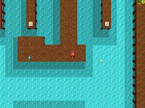
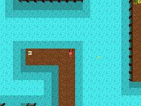
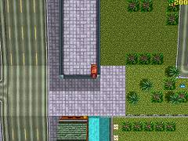
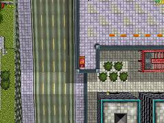
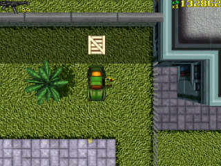
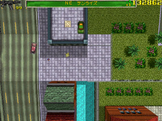
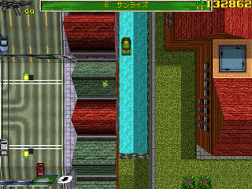
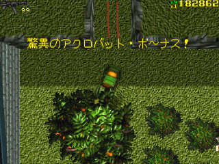

Insane Stunt Bonus
San Andreas には、車でアクロバチックなジャンプをすると Insane Stunt Bonus として $50,000 を獲得できる場所があります。
下に示した場所が、ジャンプの際の踏み切り場所となります。実際には、この場所から出来るだけ後ろに下がり、最大限の助走を確保する必要があります。また、使用する車は、なるべく加速のいいものを選んでください。
 | S Marina (42,194) |
 | NW Sunview (42,201) |
 | NE Sunrise (182,44) |
 | W Telephone Hill (13,51) |
San Andreasのチャプター1と2でそれぞれ実行可能です。一度成功すると、そのチャプター内では再度実行できません。
最も簡単に出来る場所
チャプター1には、車があらかじめ用意されていて、前に進むだけでボーナスを獲得できる場所があります。初めての場合は、ここで実験するといいでしょう。
NE Richman(182,2)に駐車してある緑の Penetrator に乗ります。そのまままっすぐ進むとジャンプし、着地すると驚異のアクロバットボーナスが入ります。途中、道路を横切るので車に衝突しないように注意しましょう（別の車を使って交通をせき止めておくとよいです）。
 | この車に乗って |
 | テイクオフ！ |
 | 飛行中 |
 | 見事に着地。$50,000ゲット。 |